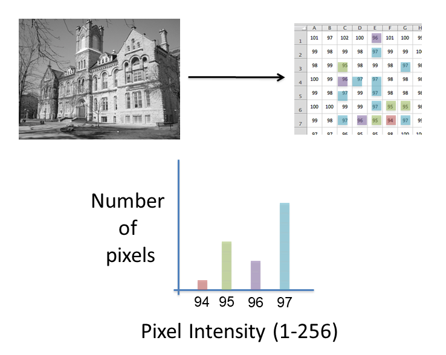
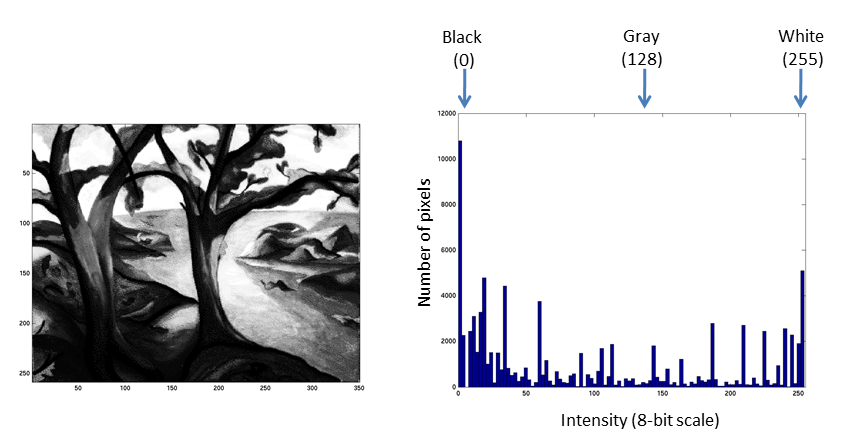
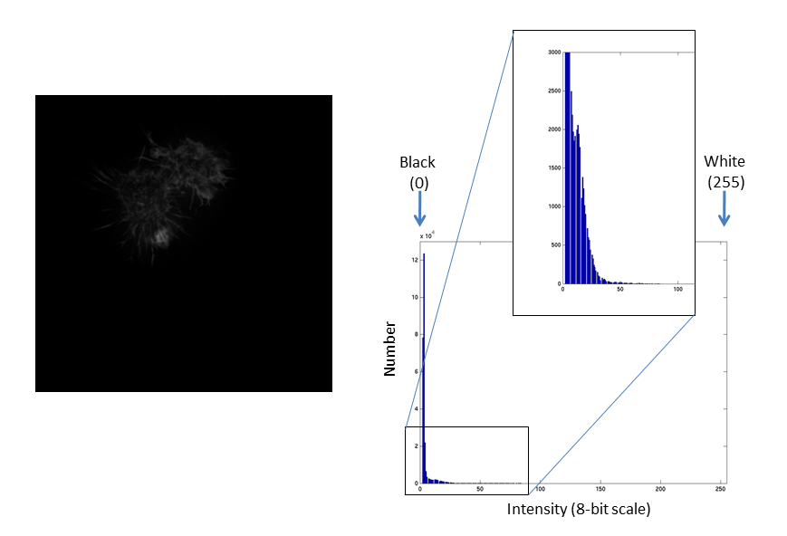
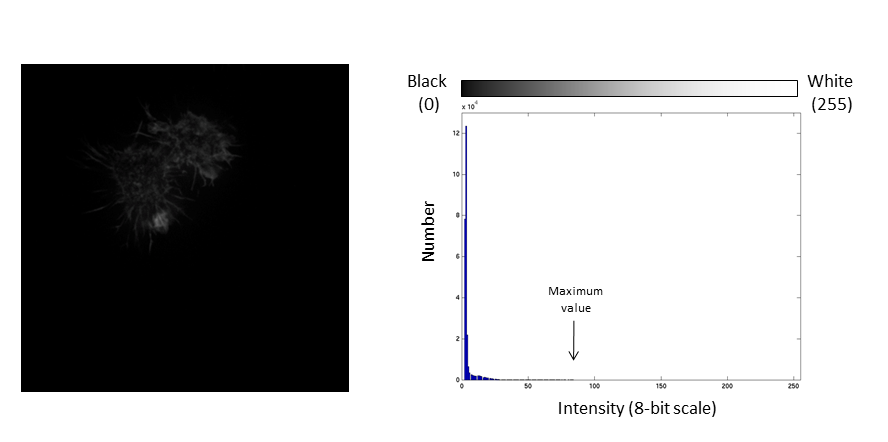
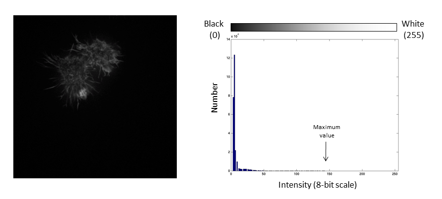
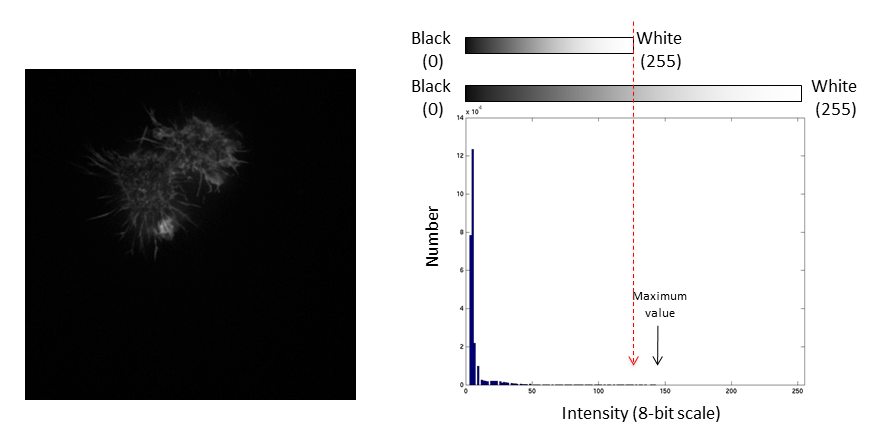
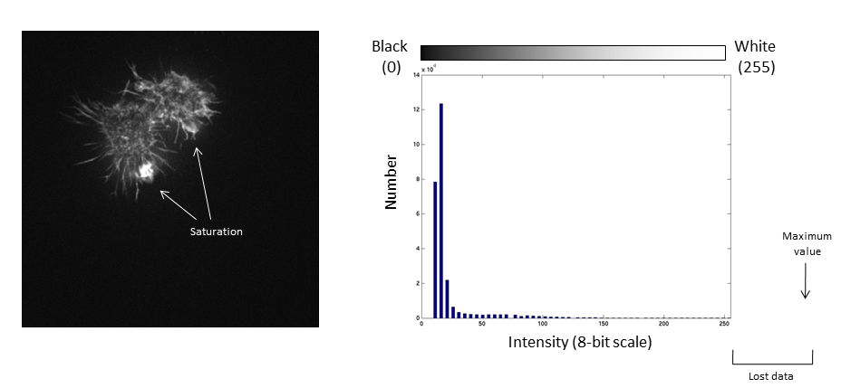

ImageJ is a java program for image processing and analysis.
Fiji extends this via plugins.
Learn more about Bio-Formats here
01-Photo.tif and 02-Biological_Image.tif[Window > Tile] command is very useful when opening multiple images[Image > Properties] also allows you to view and set calibrationum or micronImages are an array of intensity values. The intensity histogram shows the number (on the y-axis) of each intensity value (on the x-axis) and thus the distribution of intensities
Photos typically have a broad range of intensity values and so the distribution of intensities varies greatly
Fluorescent micrographs will typically have a much more predicatble distribution:
The Black and White points of the histogram dictate the bounds of the display (changing these values alters the brightness and contrast of the image)
The histogram is now stretched and the intensity value of every pixel is effectively doubled which increases the contrast in the image
If we repeat the same manipulation, the maximum intensity value in the image is now outside the bounds of the display scale!
Values falling beyond the new White point are dumped into the top bin of the histogram (IE 256 in an 8-bit image) and information from the image is lost
Be warned: removing information from an image is deemed an unacceptable maniplulation and can constitute academic fraud!
For an excellent (if slightly dated) review of permissible image manipulation see:Rossner & Yamada (2004): "What's in a picture? The temptation of image manipulation"
The best advice is to get it right during acquisition!
02-Biological Image.tif[Image > Adjust > Brightness & Contrast][Process > Enhance Contrast] to autocontrastPlugins extend the basic Fiji functionality. They are significant pieces of code that use the ImageJ libraries to achieve tasks that default Fiji cannot.
Fiji comes with an extensive selection of useful plugins already built-in.
Most other popular plugins can be installed and updated automatically from update sites by going to [Help > Update... > Manage Update Sites]
Certain plugins are not available as update sites. For those, normally a .jar file is provided. This needs to be placed inside the plugins folder on the Fiji directory.
Alternatively, you can go to [Plugins > Install Plugin...] and find the desired .jar file.
JaCoPJaCoP11-colocA.tif and 12-colocB.tif[Plugins > JaCoP]